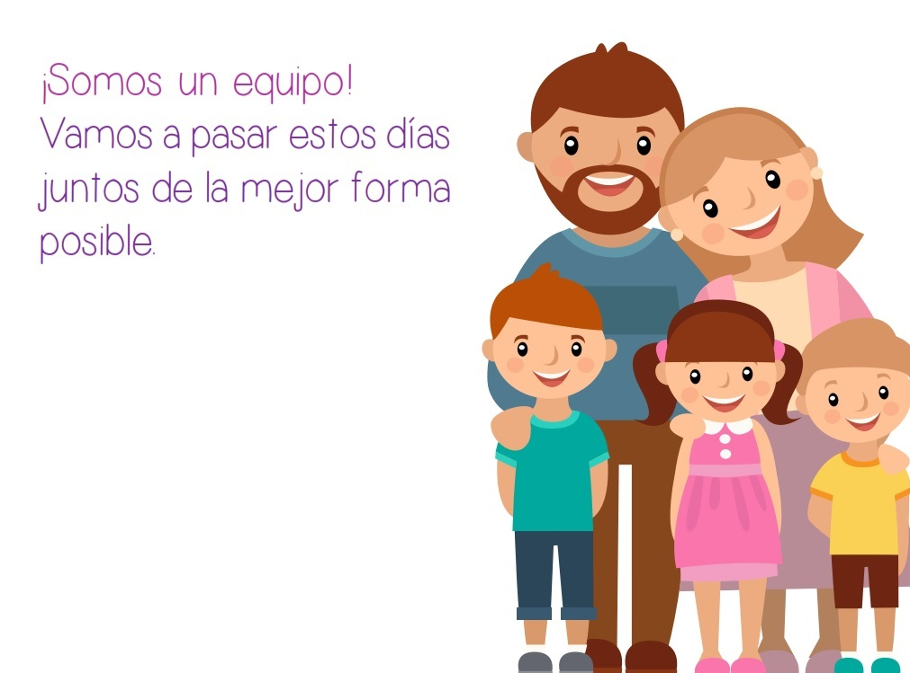

Seamos ejemplo para ellos, por eso debemos ser buenos modelos para lograr aprendizajes positivos. Debemos saber que no somos los únicos, pues profesores, amigos e ídolos marcarán también mucho de los aprendizajes que lleven a cabo. Explicarles el por qué de los comportamientos deseados así como ser coherentes y llevar a cabo aquello que exigimos aumentará las probabilidades de su adquisición. A modo de ejemplo, si pido a mi hijo que no pegue, grite o tenga conductas agresivas pero en casa, bien hacia ellos o a nivel de pareja, observan ese tipo de comportamientos, será incongruente para el menor.
Debemos ser consistentes y coherentes, tanto con las normas establecidas como con las sanciones existentes si estas no se cumplen. También es fundamental que ambos padres estén de acuerdo en ellas y trabajen conjuntamente para su cumplimiento. Las discrepancias entre los adultos deberán ser siempre resueltas en ausencia de los menores, para así mantener la coherencia de lo establecido frente a ellos.
